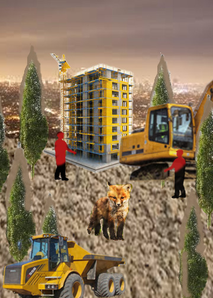

| Photomontages #1:social issue | Photomontages #2: ecological issue |
|
 |
|---|
I made this because of what's happening so far with society that has been happening for years. I chose my own photos and online photos because it's easier to use and get.
The issue I am exploring in the first Photomontages is a social issue. The techniques I used is selection/masking and blending. I chose hard light blending mode because it makes the fire look like its not even there but it is there and some people can't see it until it's too late. The source of my images is from my own gallery, that I have to precise select them out of and I used online photos since I don't have a lot of images that would help with my meaning.
The issue I am exploring in the second Photomontages is an ecological issue. The techniques I used is selection/masking and blending. I chose hard light blending mode on the fox because to show that the fox is slowly not fading out since their home are being destroyed so people can built a buildings on it. The source of the images is online on google since I don't have any pictures to use about this topic.
" Back to website "